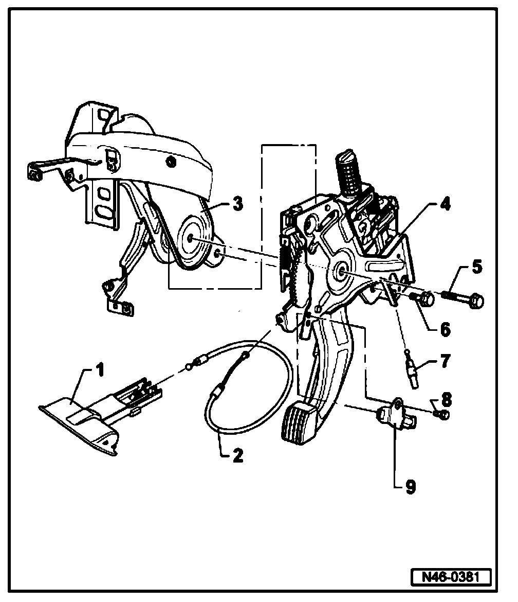
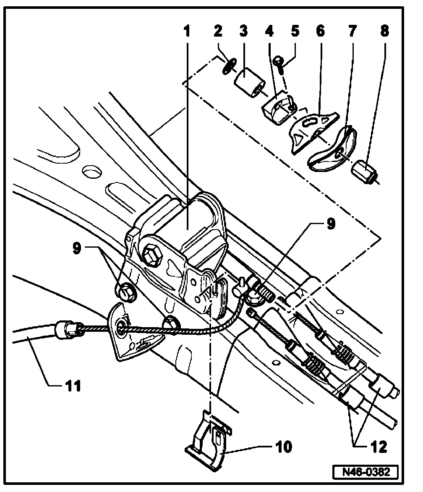
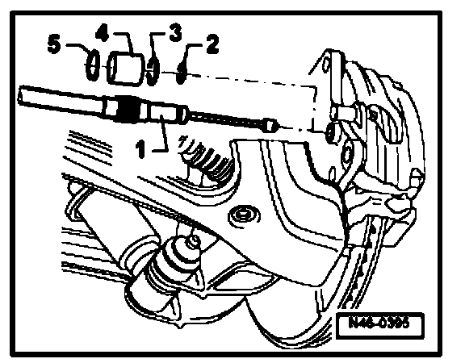

Brake Pedal Overview
Parking brake pedal, assembly overview
Foot operated parking brake lever

1. Release handle
2. Release cable
3. Bracket
4. Parking brake pedal
^ Removing and installing go to Parking brake pedal: Service and Repair
5. Hex bolt, 23 Nm
6. Hex bolt, 23 Nm
7. Front brake cable
^ Removing and installing go to Parking Brake Cable: Service and Repair: Front
8. Hex bolt, 2 Nm
9. Contact switch for parking brake
Transfer module

1. Transfer module
2. Washer
3. Buffer
4. Cable anchor bracket
5. Torx bolt
6. Cable anchor
7. Compensator
8. Hex nut
9. Hex bolt, 23 Nm
10. Clip
11. Front brake cable
^ Removing and installing go to Parking Brake Cable: Service and Repair: Front
12. Rear brake cable
^ Removing and installing go to Parking Brake Cable: Service and Repair: Rear

Rear brake cable
1 - Rear brake cable
2 - O-ring
3 - O-ring
4 - Sleeve
5 - Snap ring